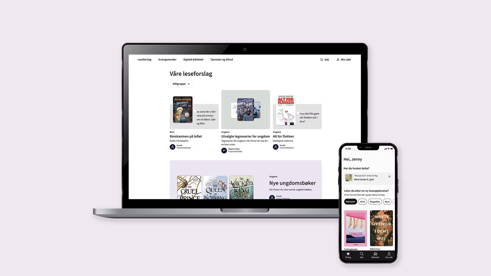
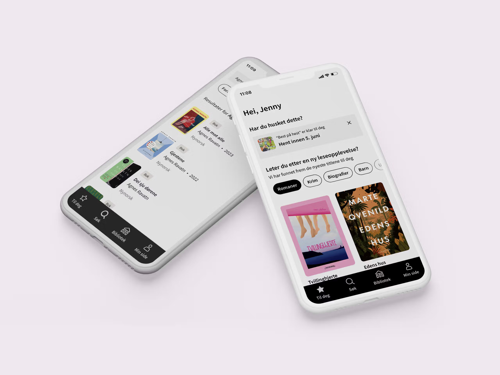
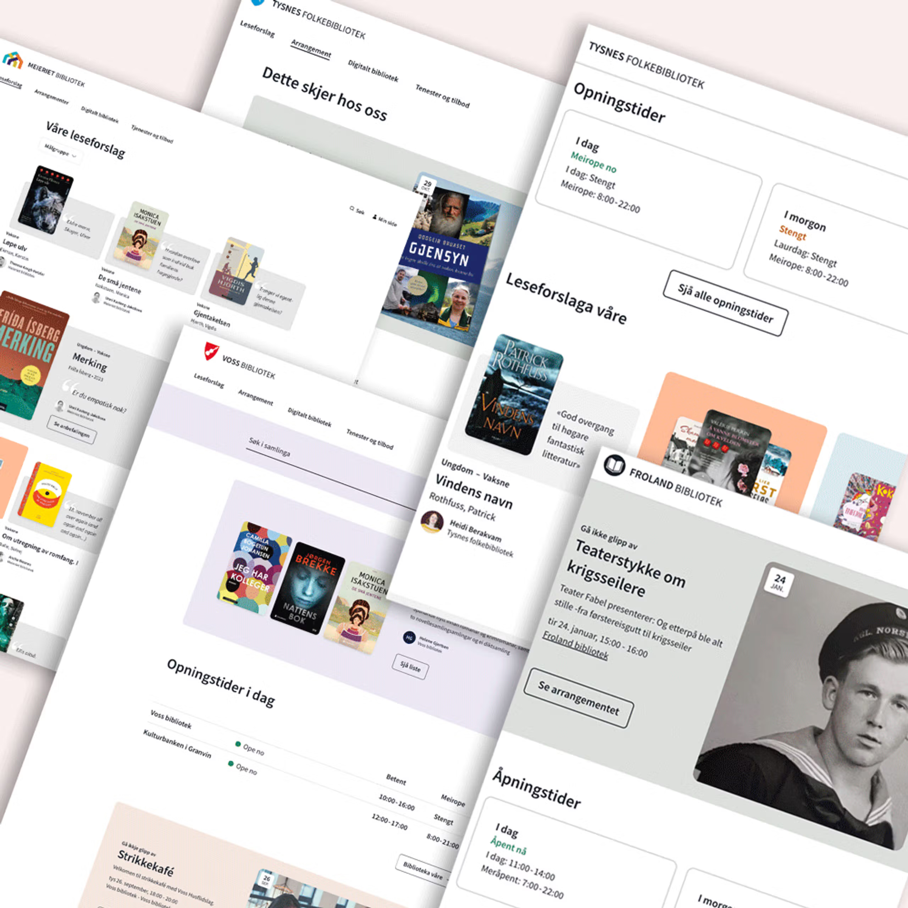

Libry Content - Biblioteksentralen
Biblioteksentralen is Norway's national library organisation. I designed their unified digital platform, Bibliotekenes Formidlingsløsning, enabling public libraries to present collections, services, and events through an integrated website CMS, patron-facing app, and staff tool.

The Challenge
Norwegian public libraries are very different from one another. A small rural branch with one staff member and mostly elderly visitors has little in common with a large city library running daily events for a diverse community. Yet both needed to use the same platform, with the same tools, to the same quality.
On top of that, the people using the libraries are equally varied, including people with disabilities, low digital confidence, and different language backgrounds. Accessibility couldn't be an afterthought; it had to be central to every design decision.
The task was to design something flexible enough for very different libraries, simple enough for non-technical staff, and inclusive enough for all kinds of patrons while still being consistent enough to eventually work as a national solution. Those goals don't always point in the same direction, and navigating that was the real challenge.

My Role and Contributions
I was the only designer on the project, handling everything from research to final delivery. To stay close to the real problem, I created two recurring research practices that ran throughout the entire project.
The first was Library of the Week. Regular visits and interviews with librarians across different municipalities. This wasn't a one-time discovery exercise. It was an ongoing habit that kept the design grounded in what librarians and patrons actually experienced, week to week.
The second was a User Panel (Brukerpanel). Bi-monthly workshops with librarians where we collectively explored, discussed, and pressure-tested new features and functions for the CMS. This gave librarians a direct voice in shaping the product over time, and gave me a structured way to validate ideas before committing to them in design and development.
I also ran user testing with a wide range of participants, including people with physical and cognitive disabilities, making sure the platform worked for everyone and not just the average user. These sessions directly shaped how the platform was structured and how content was presented across both the staff and patron-facing sides.
To complement the qualitative work, I used analytics tools such as Google Analytics and Plausible to track how patrons actually used the platform in practice. This helped me spot patterns and drop-off points that interviews alone wouldn't reveal, and gave the team a more complete picture of what was and wasn't working after release.
Beyond the design work itself, I was the link between research findings and product decisions and making the case for user needs in conversations with developers and stakeholders.
Impact
35 public libraries across Norway are now using the platform, with more joining continuously. The quality of the solution led directly to a national tender, with Bibliotekenes in position to become the standard digital platform for public libraries across the entire country.
Beyond the platform itself, some of the research methods I introduced during the project have since become standard practice within the organisation. The Library of the Week interviews and the Brukerpanel workshops are now embedded into how Biblioteksentralen continuously develops and improves the product, meaning the research culture built during the project outlasted the project itself. That, to me, is as significant as the product outcomes. It means the organisation is now better equipped to keep the platform connected to real user needs as it scales, which matters enormously when the ambition is to serve every public library in Norway.

Reflections
This project meant a lot to me personally. I believe libraries are one of the most important public institutions we have, and arguably more relevant today than ever. In a world of misinformation, social media echo chambers, and AI-generated content, the public library is one of the last spaces that exists purely in the public interest. Free to access, professionally curated, and with no agenda beyond serving the community. Librarians, in that context, are not an outdated profession. They are trusted guides in a complicated information landscape.
That belief made me want to get this right. Not just professionally, but because the work had real stakes. A platform that works means a librarian in a small town can better reach the people who need them. One that doesn't means that connection is weaker.
The Library of the Week practice kept me honest throughout. Going back regularly to the people doing the actual work stopped me from designing based on assumptions and kept the project connected to reality.
It also taught me a lot about working independently under pressure. When research pointed in a direction that was inconvenient for the roadmap, I had to make the case clearly and stand by it. That kind of confidence in your own process and knowing why you made the decisions you did, is something I developed here and carry into every project since.